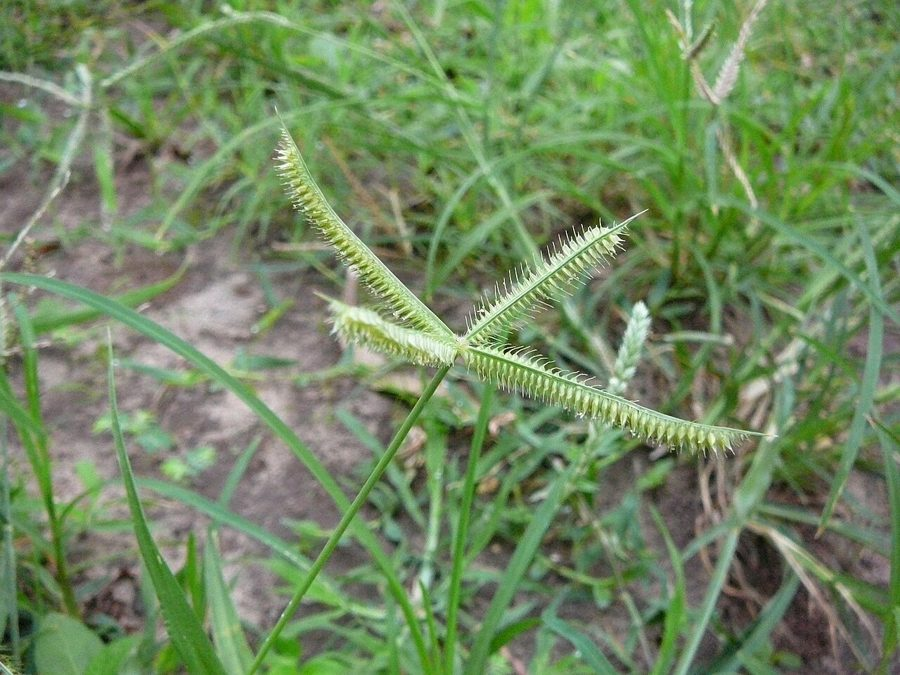

मकराCrowfoot Grass
Dactyloctenium aegyptium · Poaceae · FLR-0141

- Scientific name
- Dactyloctenium aegyptium (L.) Willd.
- Family
- Poaceae
- Hindi
- मकरा
- Local names
- makra, makara, nakra, chokri, crowfoot grass
- Status here
- native
- Movement
- Resident, here all year
- IUCN
- not evaluated
- Review
- audited and independently read
When to look कब देखें
Present all year.
Uses and possibilities उपयोग और संभावनाएँ
Drawn from the documented uses in the profile below, where each is labelled traditional, current or a research lead. All uses →
मकरा / Crowfoot Grass
Dactyloctenium aegyptium (L.) Willd. — Poaceae
मकरा — एक छोटी, कड़ी घास जो खारी और नमकीन मिट्टी पर उगती है, और सड़कों के किनारे दबी हुई जमीन पर पाई जाती है। तना छोटा, पाँच-पंद्रह सेंटीमीटर, पत्तियाँ कड़ी और संकरी। बरसात में बीज लगते हैं और सितंबर तक दाने तैयार हो जाते हैं। इसके फूल कुछ अलग हैं — पाँच-सात उँगलियों जैसी, पर ये घुमावदार होती हैं, जैसे मकर (crocodile) के पंजे। यही इसका नाम है। पशु-चारण में भी यह अच्छी घास नहीं है, पर सूखे समय में जानवर खा लेते हैं।
Quick Identification त्वरित पहचान
| Feature | Description |
|---|---|
| Height | 0.15–0.4 m, low, decumbent or ascending |
| Stems | Stout, flattened basally, ascending, hairy or smooth |
| Leaves | Linear, 3–15 cm, 3–5 mm wide, flat, often waxy |
| Inflorescence | 4–8 finger-like spikes radiating from the stem top, curved or hooked, 1–3 cm |
| Spikelets | Spiky, bearing short spines or awns along the margins |
| Grain | Very small, 1–2 mm, enclosed in spiky glumes |
Field tip: A low, spreading grass with distinctive curved, claw-like spikes (resembling a crocodile's foot), found on damp, alkaline, or trampled ground. The curved spikes and spiny spikelets distinguish it from goosegrass.
Morphology आकारिकी
Biometrics (typical measurements for the Gangetic plain):
| Measurement | Range |
|---|---|
| Plant height | 0.15–0.4 m |
| Leaf length | 3–15 cm |
| Leaf width | 3–5 mm |
| Spike length | 1–3 cm |
| Number of spikes | 4–8 per inflorescence |
| Grain length | 1–2 mm |
Root system: Fibrous roots; tolerant of alkaline and salt-affected soils where other grasses struggle.
Stems (culms): Short, often decumbent (lying along the ground), becoming erect at the base, flattened. Rooting at nodes where soil contact occurs, allowing lateral spread.
Leaves: Linear, 3–15 cm long, 3–5 mm wide, flat, often with a waxy coating. Margins can be smooth or finely toothed. The midrib is prominent.
Inflorescence: The key diagnostic feature — typically 4–8 spikes arranged digitately (hand-like) from the apex. Each spike is 1–3 cm long and strongly curved or hooked, resembling a crocodile's claw. Spikelets are densely arranged along the spike axis, each bearing short spines or awns.
Grain: Very small, 1–2 mm, dark, enclosed in the spiky glumes. Germination is rapid in moist soil.
हिंदी: छोटा पौधा, कड़ी पत्तियाँ। स्पाइक घुमावदार, मकर के पंजे जैसे। खारी मिट्टी में उगता है।
Behaviour & Ecology व्यवहार और पारिस्थितिकी
A highly specialized grass of tropical and subtropical Africa and Asia, Dactyloctenium aegyptium is a pioneer colonizer of alkaline, salt-affected, and disturbed soils where most other plants cannot survive. It is tolerant of waterlogging and soil compaction, thriving in areas exposed to heavy foot traffic or livestock trampling.
The plant's low, spreading form and rooting at nodes allow it to persist despite repeated grazing or trampling. It grows in the monsoon and dries down by winter. The spiky spikelets readily attach to animal fur and human clothing, aiding seed dispersal.
The plant is of low forage value but is eaten by livestock when no better grasses are available, particularly in the dry season when other sources are depleted.
हिंदी: यह घास खारी जमीन पर भी उग जाती है जहाँ दूसरी घास नहीं उगती। सड़कों पर दबे हुए क्षेत्र में भी यह पाई जाती है।
Life Cycle / Phenology जीवन चक्र
Dactyloctenium aegyptium is typically an annual grass, completing its life cycle in a single season, though under favorable conditions it can act as a short-lived perennial.
| Month | State | हिंदी |
|---|---|---|
| May–Jun | Sowing in rainy season nurseries or direct seeding | बीज बोना |
| Jul–Aug | Germination and vegetative growth | तेज़ बढ़ैती |
| Aug–Sep | Inflorescence emergence; flowering | फूल |
| Sep–Oct | Grain ripening and hardening | दाना पकना |
| Oct–Dec | Seed dispersal; dried plant remains | सूखा तना |
Growth cycle: Approximately 60–90 days from sowing to maturity, depending on temperature and moisture.
हिंदी: जून में बीज, जुलाई-अगस्त में फूल, सितंबर-अक्टूबर में दाना। तीन महीने का पौधा।
Associated Species / Interactions संबंधित प्रजातियाँ
- Saline habitat specialist: Often grows alongside Goosegrass and other salt-tolerant plants.
- Livestock tolerance: Browsed by cattle and goats, though not preferred.
- Insect shelter: The dense basal growth provides shelter for small invertebrates.
Pests and Diseases कीट और रोग
- Generally hardy: Few serious pests.
- Leaf blight: Occasional fungal infections in very humid conditions.
- Resilience: The plant's tolerance of harsh conditions reduces pest impact.
Agricultural / Human Relevance कृषि और मानव संबंध
Soil rehabilitation. Dactyloctenium aegyptium is valued in some regions for its ability to colonize salt-affected and alkaline soils, the first step in rehabilitation of such lands. Its establishment allows for subsequent establishment of better-quality grasses and legumes.
Livestock forage. While not a preferred fodder grass, the plant is eaten by cattle, buffaloes, and goats, particularly in the dry season when other forage is scarce. The nutritional quality is moderate.
Ecological role. The plant's presence indicates soil alkalinity or salinity and recent disturbance. Its dominance in a pasture suggests overstocking, repeated trampling, or soil degradation.
Traditional knowledge. In some regions, the dried plant is collected for fuel or bedding for livestock.
हिंदी: खारी जमीन को सुधारने में मकरा काम आती है। पशु इसे खाते हैं, पर यह अच्छी चारी नहीं मानी जाती।
Expected Locally स्थानीय रूप से अपेक्षित
Not a field record. Written from published accounts for eastern Uttar Pradesh. No confirmed local sighting yet — if you have seen it, that is what the atlas needs.
अभी तक स्थानीय पुष्टि नहीं। यह विवरण प्रकाशित स्रोतों से है, किसी अवलोकन से नहीं।
Expected on alkaline or salt-affected soils, disturbed areas, and compacted grounds throughout Basti district, particularly in areas with poor soil conditions or repeated trampling.
Distribution वितरण
Global range: Native to Africa; now widely distributed in tropical and subtropical regions globally.
In India: Found throughout the Indo-Gangetic plains, particularly in areas with alkaline or saline soils.
In Uttar Pradesh: Common in disturbed areas and salt-affected lands throughout the state.
In Basti district / eastern UP: Expected in alkaline soils, disturbed grounds, and field margins, particularly in areas of poor soil quality.
Research Questions शोध प्रश्न
Anyone can investigate these | कोई भी इन प्रश्नों की जाँच कर सकता है
- Where is crowfoot grass found in your area? / आपके इलाके में मकरा कहाँ पाया जाता है? — Record locations and note soil conditions (wet, dry, salty, alkaline).
- Does it grow in areas where other grasses do not? — Compare distribution in salty vs. non-salty soils.
- Which livestock eat it, and when? — Observe grazing behavior; note if it is eaten only in dry season.
- How many spikes does a plant typically produce? — Examine 10 plants and count spikes per inflorescence.
- Can crowfoot grass be used to improve alkaline soils? — Plant it in an experimental plot and monitor soil pH and other grasses over a season. / क्या मकरा से खारी जमीन में सुधार आ सकता है?
Similar Species मिलती-जुलती प्रजातियाँ
| Species | How to tell apart | हिंदी |
|---|---|---|
| Goosegrass (Eleusine indica) | Spikes are straight, not curved; spikelets lack prominent spines; occurs on compacted non-saline soil | कोदई — सीधी स्पाइक, कम काँटे |
| Cynodon dactylon (Bermuda grass / Doob) | Taller (15–30 cm when upright); rooting at nodes is more pronounced; less alkaline-tolerant | दूब — सीधी, रूटिंग अधिक |
| Setaria pumila (Bristle grass) | Bristles on the spikelets are not hooked; panicle is spike-like but not digitately arranged | सेटारिया — सीधे ब्रिसल |
Field rule: A low spreading grass with 4–8 strongly curved, claw-like spikes, found on damp, alkaline or salt-affected soil = Dactyloctenium aegyptium (crowfoot grass).
Taxonomy & Classification वर्गीकरण
Original description. Originally described by Linnaeus as Cynosurus aegyptius and transferred to Dactyloctenium by Willdenow. The genus Dactyloctenium contains about 10 species, mostly African, of which D. aegyptium is the most widespread.
Subspecies. Monotypic — no subspecies are currently recognised.
Family and order placement. Poaceae, subfamily Chloridoideae, tribe Cynodonteae. Closely related to Eleusine (goosegrass) and Cynodon (bermuda grass).
Phylogenetic notes. Dactyloctenium aegyptium belongs to a clade of Old World tropical grasses adapted to alkaline and saline soils.
IUCN status rationale. Not evaluated. Widespread with no conservation concerns; locally abundant in suitable habitats.
Photo Gallery फोटो गैलरी
Photos needed आवश्यक फोटो
- [ ] Low spreading plant showing growth habit
- [ ] Distinctive curved, claw-like spikes
- [ ] Close-up of spiky spikelets along the spike
References संदर्भ
- Willdenow, C.L. (1809). Enumeratio Plantarum. Berlin.
- Hooker, J.D. (1897). Flora of British India, vol. 7. L. Reeve & Co., London.
- Bor, N.L. (1960). The Grasses of Burma, Ceylon, India and Pakistan. Pergamon Press.
- Noltie, H.J. (2000). Flora of Bhutan, vol. 3. Royal Botanic Garden, Edinburgh.
- Botanical Survey of India — Flora of Uttar Pradesh (2012).
- GBIF Occurrence Data — Dactyloctenium aegyptium, India (2015–2026).
Source file: species/flora/grasses/crowfoot_grass.md